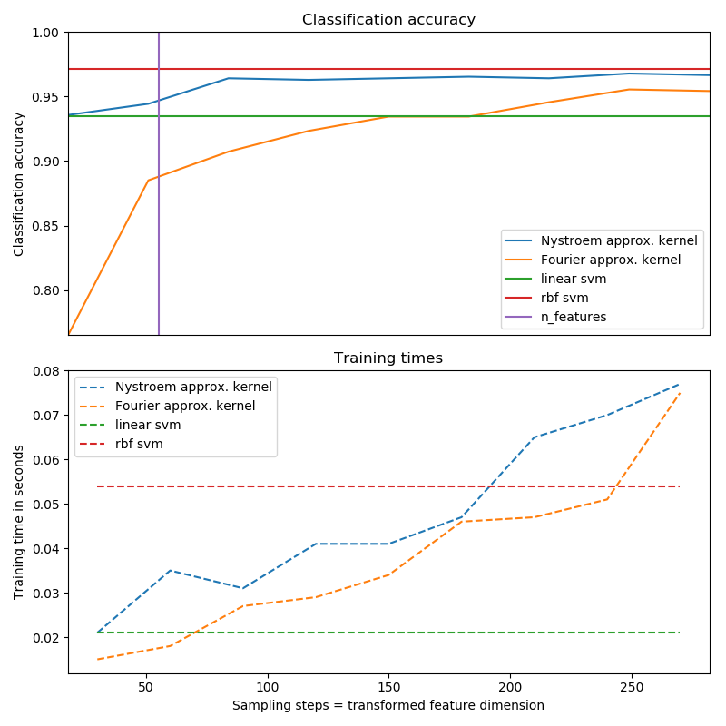
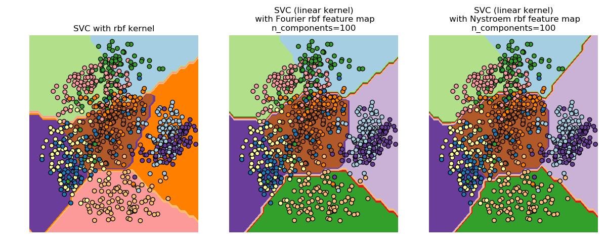

Note
Click here to download the full example code
Explicit feature map approximation for RBF kernels¶
An example illustrating the approximation of the feature map of an RBF kernel.
It shows how to use RBFSampler and Nystroem to
approximate the feature map of an RBF kernel for classification with an SVM on
the digits dataset. Results using a linear SVM in the original space, a linear
SVM using the approximate mappings and using a kernelized SVM are compared.
Timings and accuracy for varying amounts of Monte Carlo samplings (in the case
of RBFSampler, which uses random Fourier features) and different sized
subsets of the training set (for Nystroem) for the approximate mapping
are shown.
Please note that the dataset here is not large enough to show the benefits of kernel approximation, as the exact SVM is still reasonably fast.
Sampling more dimensions clearly leads to better classification results, but
comes at a greater cost. This means there is a tradeoff between runtime and
accuracy, given by the parameter n_components. Note that solving the Linear
SVM and also the approximate kernel SVM could be greatly accelerated by using
stochastic gradient descent via sklearn.linear_model.SGDClassifier.
This is not easily possible for the case of the kernelized SVM.
The second plot visualized the decision surfaces of the RBF kernel SVM and the linear SVM with approximate kernel maps. The plot shows decision surfaces of the classifiers projected onto the first two principal components of the data. This visualization should be taken with a grain of salt since it is just an interesting slice through the decision surface in 64 dimensions. In particular note that a datapoint (represented as a dot) does not necessarily be classified into the region it is lying in, since it will not lie on the plane that the first two principal components span.
The usage of RBFSampler and Nystroem is described in detail
in kernel_approximation.
- 
- 
print(__doc__)
# Author: Gael Varoquaux <gael dot varoquaux at normalesup dot org>
# Andreas Mueller <amueller@ais.uni-bonn.de>
# License: BSD 3 clause
# Standard scientific Python imports
import matplotlib.pyplot as plt
import numpy as np
from time import time
# Import datasets, classifiers and performance metrics
from sklearn import datasets, svm, pipeline
from sklearn.kernel_approximation import (RBFSampler,
Nystroem)
from sklearn.decomposition import PCA
# The digits dataset
digits = datasets.load_digits(n_class=9)
# To apply an classifier on this data, we need to flatten the image, to
# turn the data in a (samples, feature) matrix:
n_samples = len(digits.data)
data = digits.data / 16.
data -= data.mean(axis=0)
# We learn the digits on the first half of the digits
data_train, targets_train = (data[:n_samples // 2],
digits.target[:n_samples // 2])
# Now predict the value of the digit on the second half:
data_test, targets_test = (data[n_samples // 2:],
digits.target[n_samples // 2:])
# data_test = scaler.transform(data_test)
# Create a classifier: a support vector classifier
kernel_svm = svm.SVC(gamma=.2)
linear_svm = svm.LinearSVC()
# create pipeline from kernel approximation
# and linear svm
feature_map_fourier = RBFSampler(gamma=.2, random_state=1)
feature_map_nystroem = Nystroem(gamma=.2, random_state=1)
fourier_approx_svm = pipeline.Pipeline([("feature_map", feature_map_fourier),
("svm", svm.LinearSVC())])
nystroem_approx_svm = pipeline.Pipeline([("feature_map", feature_map_nystroem),
("svm", svm.LinearSVC())])
# fit and predict using linear and kernel svm:
kernel_svm_time = time()
kernel_svm.fit(data_train, targets_train)
kernel_svm_score = kernel_svm.score(data_test, targets_test)
kernel_svm_time = time() - kernel_svm_time
linear_svm_time = time()
linear_svm.fit(data_train, targets_train)
linear_svm_score = linear_svm.score(data_test, targets_test)
linear_svm_time = time() - linear_svm_time
sample_sizes = 30 * np.arange(1, 10)
fourier_scores = []
nystroem_scores = []
fourier_times = []
nystroem_times = []
for D in sample_sizes:
fourier_approx_svm.set_params(feature_map__n_components=D)
nystroem_approx_svm.set_params(feature_map__n_components=D)
start = time()
nystroem_approx_svm.fit(data_train, targets_train)
nystroem_times.append(time() - start)
start = time()
fourier_approx_svm.fit(data_train, targets_train)
fourier_times.append(time() - start)
fourier_score = fourier_approx_svm.score(data_test, targets_test)
nystroem_score = nystroem_approx_svm.score(data_test, targets_test)
nystroem_scores.append(nystroem_score)
fourier_scores.append(fourier_score)
# plot the results:
plt.figure(figsize=(8, 8))
accuracy = plt.subplot(211)
# second y axis for timeings
timescale = plt.subplot(212)
accuracy.plot(sample_sizes, nystroem_scores, label="Nystroem approx. kernel")
timescale.plot(sample_sizes, nystroem_times, '--',
label='Nystroem approx. kernel')
accuracy.plot(sample_sizes, fourier_scores, label="Fourier approx. kernel")
timescale.plot(sample_sizes, fourier_times, '--',
label='Fourier approx. kernel')
# horizontal lines for exact rbf and linear kernels:
accuracy.plot([sample_sizes[0], sample_sizes[-1]],
[linear_svm_score, linear_svm_score], label="linear svm")
timescale.plot([sample_sizes[0], sample_sizes[-1]],
[linear_svm_time, linear_svm_time], '--', label='linear svm')
accuracy.plot([sample_sizes[0], sample_sizes[-1]],
[kernel_svm_score, kernel_svm_score], label="rbf svm")
timescale.plot([sample_sizes[0], sample_sizes[-1]],
[kernel_svm_time, kernel_svm_time], '--', label='rbf svm')
# vertical line for dataset dimensionality = 64
accuracy.plot([64, 64], [0.7, 1], label="n_features")
# legends and labels
accuracy.set_title("Classification accuracy")
timescale.set_title("Training times")
accuracy.set_xlim(sample_sizes[0], sample_sizes[-1])
accuracy.set_xticks(())
accuracy.set_ylim(np.min(fourier_scores), 1)
timescale.set_xlabel("Sampling steps = transformed feature dimension")
accuracy.set_ylabel("Classification accuracy")
timescale.set_ylabel("Training time in seconds")
accuracy.legend(loc='best')
timescale.legend(loc='best')
# visualize the decision surface, projected down to the first
# two principal components of the dataset
pca = PCA(n_components=8).fit(data_train)
X = pca.transform(data_train)
# Generate grid along first two principal components
multiples = np.arange(-2, 2, 0.1)
# steps along first component
first = multiples[:, np.newaxis] * pca.components_[0, :]
# steps along second component
second = multiples[:, np.newaxis] * pca.components_[1, :]
# combine
grid = first[np.newaxis, :, :] + second[:, np.newaxis, :]
flat_grid = grid.reshape(-1, data.shape[1])
# title for the plots
titles = ['SVC with rbf kernel',
'SVC (linear kernel)\n with Fourier rbf feature map\n'
'n_components=100',
'SVC (linear kernel)\n with Nystroem rbf feature map\n'
'n_components=100']
plt.tight_layout()
plt.figure(figsize=(12, 5))
# predict and plot
for i, clf in enumerate((kernel_svm, nystroem_approx_svm,
fourier_approx_svm)):
# Plot the decision boundary. For that, we will assign a color to each
# point in the mesh [x_min, x_max]x[y_min, y_max].
plt.subplot(1, 3, i + 1)
Z = clf.predict(flat_grid)
# Put the result into a color plot
Z = Z.reshape(grid.shape[:-1])
plt.contourf(multiples, multiples, Z, cmap=plt.cm.Paired)
plt.axis('off')
# Plot also the training points
plt.scatter(X[:, 0], X[:, 1], c=targets_train, cmap=plt.cm.Paired,
edgecolors=(0, 0, 0))
plt.title(titles[i])
plt.tight_layout()
plt.show()
Total running time of the script: ( 0 minutes 1.431 seconds)